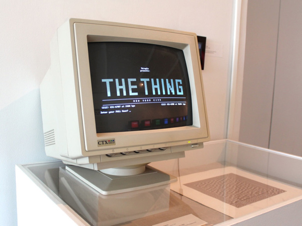
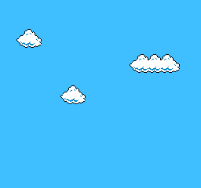
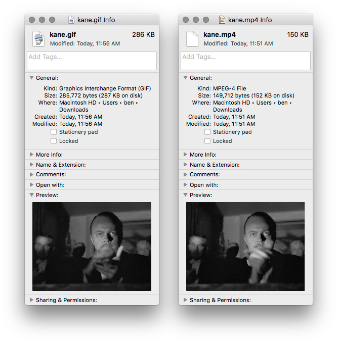
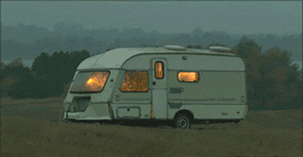
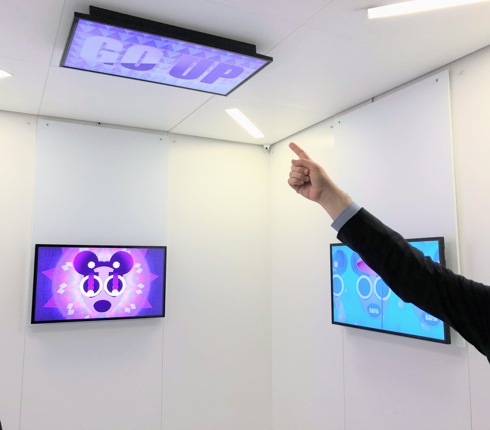
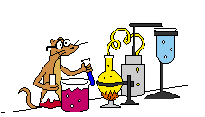
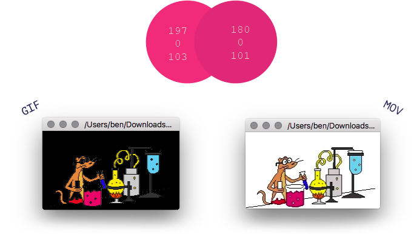
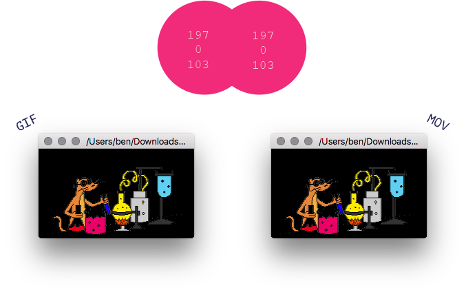

Long Live the Animated GIF
A Study on the Curation, Acquisition, and Preservation of Animated GIFs
! important;
This report is open source. We welcome and encourage edits, corrections, and additions in the form of pull requests and issues on GitHub.
As well, this report is licensed under a Creative Commons Attribution-ShareAlike 4.0 International License.
The Museum of the Moving Image (MoMI) is well known for its curatorial programming that showcases the art and cultural heritage of the moving image. In addition to the museum’s deep roots in the film industry and its exhibitions of artifacts from the history and craft of film production, MoMI has extensively exhibited digital moving-image art and artifacts such as Animated GIFs, virtual reality, interactive software, and video games. This curatorial engagement with contemporary moving-image culture has led MoMI to consider the permanent collection and conservation of these and other fragile digital artifacts.  Typically, many institutions find they have accrued a backlog of artifacts acquired long before protocols and procedures were in place to manage them, but MoMI is in the unique position of being able to consider a program of digital collections care and preservation with a fresh start.
Typically, many institutions find they have accrued a backlog of artifacts acquired long before protocols and procedures were in place to manage them, but MoMI is in the unique position of being able to consider a program of digital collections care and preservation with a fresh start.

Thanks to generous support from the Andrew W. Mellon foundation, MoMI is presently engaged in an effort to explore what a program of collecting and conserving digital moving-image art and culture may look like. The first phase of this initiative entailed establishing achievable goals for the museum’s internal workflows and systems, as well as procedures for acquiring and conserving time-based media. As the museum works toward these goals, the next phase of the project will entail a series of case studies that delve deeply into the nuances of three areas of collecting interest for the museum: Animated GIFs, online social platforms for the creation and distribution of moving images, and the born-digital artifacts of the film production process. This first report takes the Animated GIF as subject, and will explore the technical and social contexts of the Animated GIF, review how contemporary artists are working with the Animated GIF as a medium, and finally, discuss pitfalls and considerations for the authentic display and long-term preservation of these looping moving images.
authentic display and long-term preservation of these looping moving images.
For the purposes of this case study, fourteen stakeholder interviews were conducted with artists, technicians, curators, and preservation experts who have worked extensively in creating, exhibiting, and preserving the Animated GIF format in their respective professions. Although some interviewees work in an interdisciplinary space between roles, they can be roughly categorized as follows: ten artists, two technicians, two curators, and one preservation expert. Each interviewee was asked about their creative practice, the history of institutional display for their work, and their own preferred methods of display.
How GIFs Work
Despite its outward appearance as a very simple and lightweight file type—especially when compared to digital video formats and codecs—the specification for the GIF is detailed and flexible, supporting a range of optional features which are now expected when one visualizes what a GIF is.
which are now expected when one visualizes what a GIF is.
Here we provide a high-level overview of the format, and then drill down to describe each conceptual layer in detail as we get closer to what the bytes on disk represent. We will take care to highlight the format’s salient technical and design decisions, and when appropriate the context and/or influence of those decisions.
While we will strive to stay consistent with the vocabulary in the GIF89a Specification, some terms and concepts will be simplified for clarity, as we do not aim to replicate said specification, nor provide all the necessary details to implement your own decoder or encoder.

conceptual overview of the format by Matthew Flickinger
A GIF describes a logical screen, with optional color tables, images, and optional extensions. The logical screen is a virtual canvas where one or more images will be rendered. The images can use a palette of colors defined by the global color table, or an image-specific local color table. There are four common extension types, described in further detail below.
Extensions

The simplest extension is the Comment Extension, which allows plain text to be embedded with the GIF, usually meant to be read by humans, for example the following GIF, distributed with Compushow tool (created by CompuServe, when introducing GIF89a):
COMMENTS: ...The picture is me (Bob Berry) at Red Rock Crossing, one of the most photographed spots in the state of Arizona. In addition to being a very popular destination for tourists, Sedona has frequently been used as a movie location. Literally dozens of westerns were filmed in the area during the fifties and sixties, and many a good guy has chased the bad guys across Oak Creek with Cathedral Rock in the background. Most recently, "Midnight Run", with Robert DeNiro and Charles Grodin featured a car chase with the "Sedona Police" (about a year before there were any Sedona Police!)...
More complex than the Comment Extension is the seldom used Plain Text Extension, which allows for rendering of plain text as a graphic on the screen. One of the few examples of this being used is in the above GIF, where we can see the declaration of the pronouncement of GIF. The best interactive tool we have found to explore these extensions is gifiddle, which correctly renders the plain text extension:
$ #commandline plain text extension $ strings BOB90A.GIF | grep JIF |s,Oh, incidentally, it'spronounced "JIF"
The most commonly used extension is the Graphic Control Extension, introduced by CompuServe in 1989 with the GIF89a format. This extension adds support for animation delays, transparent background colors, and the ability to update the gif when rendering a new frame. Examples of different kinds of update strategies are illustrated in this GIF.
{kind=link}
The most commonly used application extension is the Netscape Looping Application Extension, which describes if the images should be looped forever or a set number of times.
Animations
The GIF is most often thought of as a looping video, which requires a number of the aforementioned extensions to be in play. First of all, the format needs to be GIF89a—the GIF87a specification makes no mentions of animations, while GIF89a supports two key features: the ability to specify how long to wait between frames, and the ability to do partial updates (which is necessary for animations to be small enough to be viewed in a reasonable time). In addition, the NETSCAPE2.0 application extension was necessary to have a GIF tell renderers to loop the animation. Although the NETSCAPE2.0 extension was originally intended as a slideshow format, it became more popular for making GIFs loop forever. We will delve further into the historical context of Netscape’s application extension later in the study.
On Disk format
A survey of what the bytes on disk represent, for follows4749 4638 3761 0100 0100 f000 002d 2d2d 0000 002c 0000 0000 0100 0100 0002 0244 0100 3b
hexadecimal view of a 1x1 pixel gray GIF made in Preview.app
name | bytes (b=binary) | value | meaning |
header | 474946383961 | GIF87a | format |
logical screen descriptor | 0100 0100 | 1 1 | width (pixels) height (pixels) |
F0 b1 b111 b0 b0 | true 8 false 2 | global color table (true) bits per color (8) table sorted (false) size of color table (2) | |
00 00 | 0 0 | background color index pixel aspect ratio | |
color table | 2d2d2d 000000 | 2d2d2d 000000 | color 0 rgb(45,45,45) (gray) color 1 rgb(0,0,0) (black) |
image descriptor | 2c 0000 0000 0100 0100 00 | , 0 0 1 1 0 | separator left offset top offset image width image height local color table (false) |
image data | 02 02 44 01 00 | 2 2 init clear end | lzw min code size number of bytes lzw index code table initialize an image, clear to background color (index 0) (gray) block terminator |
terminator | 3b | ; | GIF file terminator |
Limitations
The specification necessarily provides limits to what can be expressed by a GIF:
- Minimum valid file size is 26 bytes (1x1pixel, no color specified)
- Width or height can be up to 65,535 pixels
- Palettes can be up to 256 colors, and must be a power of 2 (You can have multiple images on the screen, each with a local color table to display more than 256 colors per frame)
- The max animation delay per image is 2^16 ms (about 11 minutes per frame)
An Ontology of Animated GIF Art
A technical understanding of the Animated GIF as a file format specification is an important foundation for discussing artistic practice and inherent vice—but this context would be incomplete without establishing the context in which the Animated GIF exists as moving image artifact and contemporary artistic medium.
The impulse to share moving image has been documented since the pre-cinematic 19th century, with the widespread proliferation of optical toys. Unlike photography, optical toys such as the thaumatrope, phenakistoscope, or zoopraxiscope were not entirely mimetic but also included cartoonish animations, which would loop as the toy manually spun. Through the invention of film stock for moving image, the desire to see motion projected on a flat surface became rampant and part of everyday existence, especially in the developed world. With the invention of the personal computer and eventually the world wide web, it is fair to assume that the desire for moving image experience would be translated to this mode of display.

One of many Eadward Muybridge zoopraxiscopes and discs. Photograph by Wikipedia user Zoopraxiscope, distributed under a CC-BY-SA-4.0 license
To fully understand the motivation behind artists utilizing GIFs for the purpose of creative expression, it’s important to first understand the history of artist collaboration and socialization on the internet. Online artist collaboration and widespread file sharing begins with the history of bulletin board systems. Although the use of computer technology for the sake of creative expression dates back to the 1950s, with works like Ben Laposky’s Oscillon 40, these origins predate the ability for artists to share their work with a wider community using digital technology as both a means of communication and distribution and as a creative medium.
The ability to communicate with colleagues from across the world through their computers had profound implications for artists, both conceptually and in practice. Electronic bulletin board systems (BBS), which predate web browsers or the widespread use of URLs, allowed users to access online communities through a terminal, where they could upload and download information, or even live chat over dial-up. Just as an artist may send work through the mail to a friend, they were suddenly able to do so in what felt like an instant and receive a response just as quickly, despite the much slower speed of servers at the time. Artists were sharing artwork through bulletin boards and even prior to that a Canadian-based telecommunications program by IPSA via ARTBOX/ARTEX as early as the 1980s. ARTBOX, later renamed to ARTEX, was the first online mail program used by and geared towards artists specifically. On BBS, Artists could use programs like Ian E. Davis’ TheDraw allowing others to edit their ANSI and ASCII art projects. Much of the artwork on BBS at this time can be defined as pixel art. Pixel art predates GIF art as a coined concept by five years. In 1982, the terminology was first used by the Xerox Palo Alto Center. Yet, pixel art itself dates back to 1972, where it was first introduced on the SuperPaint System, also from Xerox. Pixel art during this period can be defined by its process of creation through raster graphic software. Generally categorized by 8-bit features the ability to only display up to a 256 color palette. The first existing documented discussions surrounding pixel art in a fine art context do not surface until the mid 1990s.
Although the first BBS was active in the late seventies, the first BBS hub specifically catering to and attracting artists was Wolfgang Staehe’s The Thing, which was created in 1991. There were vast limitations to BBS at the time, including the inability to post moving-image artwork that could be viewed directly on the server.; Because BBS clients at the time could not handle moving images, these files had to downloaded directly on to a personal computer to be viewed.
The Thing BBS as exhibited in the New Museum exhibition ‘NYC 1993: Experimental Jet Set, Trash and No Star’
Although it was not an Animated GIF, significant nonetheless to the history of the GIF and its context within the contemporary art world, is the fact that Staehle convinced painter Peter Halley to produce a GIF to be distributed and sold as a digital work of art through The Thing.

Peter Halley, Superdream Mutation, 1993
The GIF was initially created to be used with Compuserve’s bulletin board system. Although it was originally designed for still images, artists quickly took advantage of the GIF’s ability to encode multiple frames in one file (as discussed above in How GIFS Work) and began using GIFS to share compressed moving image files without the need for download. Although Compuserve’s use of GIF was initially under copyright and for use on their bulletin board system only, it was rare for the company to attempt to suppress uses of the file type elsewhere. By the early ‘90s, GIFs could also be found on America Online (AOL) and Prodigy. By 1995, there were over 40,000 GIFs shared on Compuserve alone.
GIFs of the Early Web
With the rise of early web hosting platforms such as Geocities and Angelfire, anyone with a url had the ability to host GIFs on a webpage without any expertise in operating a server required. Many of these often simple very low resolution GIFs would be preserved through GifCities, a searchable Internet Archive page. Although these GIFs weren’t necessarily created in a fine art context, they had a major influence on the work of artists expressing themselves by way of the net, and are undisputedly important artifacts conveying moving image culture and history on the web. In February 2012, Jason Eppink curated Under Construction for the Museum of Moving Image—an exhibition in the lobby of MoMI that showcased Animated GIFs used by users on Geocities to let visitors know that their homepage was under construction

“Under Construction” – a display of under construction animated GIFs in the lobby gallery of MoMI in 2013, organized by Jason Eppink, Associate Curator of Digital Media
Early GIF Artwork
As artists began communicating via bulletin board systems as early as the 1980s, it is plausible to assume that the adoption of the GIF as a vehicle for creative communication came as early as the file type itself, circa June 1987.
The web browser was invented as early as 1989 but would not integrate support for rendering GIF files for at least five years.  In 1995, Netscape would open the flood gates by adding an animation extension to the GIF format and integrating support for rendering these Animated GIFs inline in HTML web pages viewed in Netscape Navigator 2.0.
In 1995, Netscape would open the flood gates by adding an animation extension to the GIF format and integrating support for rendering these Animated GIFs inline in HTML web pages viewed in Netscape Navigator 2.0.  The earliest documented example of contemporary artists working with the Animated GIF appears two years later, in 1997, with MTAA’s Simple Net Art Diagram.
The earliest documented example of contemporary artists working with the Animated GIF appears two years later, in 1997, with MTAA’s Simple Net Art Diagram.

MTAA’s Simple Net Art Diagram, 1997, digital image
One year later, Olia Lialina would appropriate an Animated GIF called Dancing Girl for her commissioned splash page for rhizome.org. This GIF in many ways became Lialina’s muse for her own expression as a GIF artist, or as she puts it, GIF model.

Chuck Poynter’s Dancing Girl, appropriated by Olia Lialina for her 1998 Rhizome Splash Page
In 1998–1999, Thomson and Craighead created Weightless a piece which they hosted on their web page. Weightless included GIF files within a larger context of animated web graphics, chat room transcripts and MIDI music. Almost every discoverable page included an appropriated Animated GIF, likely with folk art origins.
GIF adaptation of Cory Arcangel's Super Mario Clouds
In 2002, Cory Arcangel created a GIF version of his Super Mario Clouds project. Motivated to share the looped work online, Arcangel resorted to GIF out of necessity, as in the early 2000s embedded video was still far from being a native format inherently supported by all browsers. The first known host of the GIF, which also acted as the first public version of the artwork, was also entitled Super Mario Clouds.
In 2005, Lialina released her own Animated GIF inspired by the GIF she had appropriated for her 1998 Rhizome splash page. Of particular note is the comment metadata embedded in the image file.
Olia With Hula Hoop Released 2005-01-01 by olia@profolia.org Don't squeeze me! Contact me if you read this, i will make a link to your site. This GIF file is in the public domain. Use freely!
Surf Clubs and Real-Time Image Sharing
By the mid-2000s, a new form of online artist communities emerged: surf clubs. Surf clubs were in essence dedicated and collaborative blogs wherein artists would post hidden gems of strange content they had found in their online explorations, and which also often served as sites for the remixing of this content and sharing of Animated GIFs. Surf clubs such as NOBLOG / 544x378WEBTV / SCREENFULL, and Nasty Nets became creative hubs for artists to upload their Animated GIFs.
Animated GIF from the home page of Nasty Nets in 2006
Beyond Surf Clubs, rich troves of artist-created GIFs could be found in artist-run online communities such as Computers Club (which was invite only, but had a public facing blog of member-created content) and Dump.fm (2010-2017), which was an open platform where artists could chat and share GIFs in real-time conversations revolving around image sharing, remix, memes, and inside jokes.
Animated GIF from the home page of Petra Cortright in 2008
Contemporary Practices
In 2007, Tumblr launched with the ability to host Animated GIFs. Many artists already working in the medium found a broad community on the platform, which unlike surf clubs exposed their work to general audiences outside niche net art communities. Initially, Tumblr could only host GIFs under 1MB and, at most, 500 pixels by 500 pixels in resolution. These constraints of course created challenges for artists who were used to working freely by either hosting content on their own websites and servers, or on those operated by peers. Artists were forced to down-res GIFs that were larger than 500 pixels and to either decrease the number of frames in the animation or decrease the GIF’s color palette to stay within the 1MB file size limitation.

An Animated GIF by Yoshi Sodeoka posted in 2011
Although Animated GIFs of the early web were just that—animations—by the time Tumblr and other web 2.0 platforms had emerged, it had become incredibly common to see Animated GIFs that had been created from excerpts of a video—often a television show or film. This coincided very closely with the advent of HTML5 and modern web browsers integrating video as a natively supported object, as opposed to requiring proprietary and format-specific plugins. Today, Animated GIFs uploaded to platforms such as Twitter, Facebook, or even GIPHY (a platform dedicated to searching and sharing Animated GIFs) are transcoded to video.
An Animated GIF and its MP4 derivative—note that the MP4 is nearly half the size of the GIF it was derived from.
Today, most often when one encounters a “GIF” on the internet, one is actually looking at a video in the webm or MPEG-4 codecs. This is due to the fact that video compression is more efficient, meaning less data to store and less data to transmit to users. This translates to cost savings for the platforms and faster page load times for users. This is sensible only when considering the shape and form that GIFs take today, in the sense that they derive originally from video sources; however, as we will discuss further on, the process of transcoding introduces potentially significant changes to the look and feel of the original GIF. This is a consideration that bears greater significance when the GIF at hand is an artwork being prepared for exhibition.
Cultural Context of the Animated GIF in 2018
As discussed previously, the Animated GIF was the first portable file format to allow any form of moving image to be hosted on a server without a viewer having to download the file to their own computer. This revolutionary ability is what struck most artists on the web; although they were aware of the format’s shortcomings. Lialina herself has exclaimed that she did not like the limitations of the compressed format, having only the ability to show a 256 color spectrum with noticeable pixelation, and she is likely not alone. Once services such as AOL gained the ability to host larger file formats, the GIF had already penetrated the fine art community. Nostalgia for the particular components of the limited file type have remained, and so artists continue to create GIFs in the actual GIF file format.
Our interviews suggest that among the tools and processes artists presently employ for creating and manipulating GIFs, Adobe Photoshop and Adobe After Effects are the most commonly used. Many artists we spoke with have dabbled with online GIF generators throughout the careers, including popular websites like Blingee and others that come up during a google search, like MakeaGIF. One artist expressed a preference for using GIMP, an open source raster graphics software, in place of Photoshop. Materially speaking, we found that artists are almost consistently transcoding their Animated GIFs to video, or even exporting from their authoring environment directly to video. For some artists this is because they have exhibition in mind, and for others, it is simply due to the shift in how video is treated as being native to the web. Of the artists interviewed, only one expressed the feeling that the Animated GIF file format is inherent to their work—that an MPEG-4 derivative is inherently lesser.
The interviews also revealed an important point about the shifting meaning of the term “GIF.” While the format can support both animated and static images, we found that “GIF” is used today to refer to any short, infinitely looping moving image. Even artists who export these short looping videos directly from their authoring environments as video—rather than transcoding a GIF to video—often refer to these videos as Animated GIFs. Fascinatingly, GIF has come to refer to a compositional structure—short, infinitely looping image sequences—not a data structure or file format.
Considerations for Display
Many forms of time-based media art can be said to only exist once a piece has been fully installed in an exhibition space—otherwise it is simply a collection of its constituent parts in storage. This holds true in some sense for digital art and culture that lives online, such as the Animated GIF, in that the decision-making around what equipment is used and how can greatly shape the look, feel, and perception of the artifact. It is, however, inherently different when these digital artifacts lived online first and foremost, and were ordinarily viewed on a personal computer. As art, they were often originally experienced from the intimacy of the home, so exhibiting and displaying these materials in a physical art-viewing space (be it a gallery or museum) can often be a challenge for artists and curators. A major focal point of the stakeholder interviews was understanding the ways in which the artists, curators, technicians, and preservation experts have seen, or chosen to have, GIFs exhibited.
Artist’s Practices Online
Artists currently working with Animated GIFs are inclined to initially share their work by uploading it online, most commonly to their own webpages, Tumblr, or GIPHY. The website in which the artist uploads their Animated GIF can drastically alter the way that GIF is seen, either in relation to the whole of the page it’s hosted on or the way in which the GIF itself performs. For example, a popular platform for GIFs historically has been You’re The Man Now Dog, better known as YTMND. YTMND was the first website that hosted GIF files which also allowed for audio to be uploaded and published simultaneously. This feature gave the illusion that the GIF had synced audio. Because GIF files uploaded with audio to the website were larger, this would sometimes cause delays in the intended speed at which the GIF was meant to run. Any updates to YTMND’s website could and often would potentially cause the music to no longer be in sync with the rhythm of the loop. These slight changes in duration, which at least some GIF artists were certainly aware of, became a feature in their own right of posting on YTMND. This is just one example regarding the way online hosts affect the way in which GIFs are ultimately displayed. YTMND came into existence in 2001, but, as mentioned in the Ontology, artists had already begun posting their Animated GIFs online as early as 1998, such as on Rhizome’s splash page.
When preparing GIFs for sharing through online platforms, as opposed to a simple web server under the artist’s control, artists often will be forced to coax as much as they can out of the GIF format, and the tool they are using to create it, in order to fit within the limitations of the given platform. As mentioned earlier, Tumblr launched with the capability to host GIFs up to 1.5MB, which was raised to 2MB in 2015, and 3MB in 2016.
Animated GIF from Tumblr Staff blog celebrating the increase in GIF file sizes from 2MB to 3MB
Artists also tend to create GIFs with certain formats of display in mind, particularly web pages, which dictate the resolution and speed their GIFs can have. At least thus far, it is less common for artists to create GIFs with institutional exhibition in mind, causing manipulations in format and even visual content for new modes of display. That being said, outliers should still be noted and more artists working with Animated GIF do consider this possibility, creating various formats from the get-go. In the case of Nicolas Sassoon, there are particular GIFs that are created with institutional display in mind, especially Wallpapers. Lorna Mills also exports her GIFs directly from her authoring environment to MPEG-4 or MOV with exhibition in mind.
Display Strategies in Exhibition Spaces
Our stakeholder interviews included a wide variety of perspectives from artists who have exhibited Animated GIFs in museums and galleries internationally. Despite this diverse sample, we found a great deal of consistency in how Animated GIFs are presently exhibited in galleries and museums.
Curators are the chief driver of Animated GIFs in the museum, often deciding the context in which the GIF is shown, and the format in which it’s displayed. A member of the curatorial team will often start by reaching out to the Animated GIF artist of interest. In some cases, the curatorial team will already have the exhibition display in mind, to match their context, before the artist has been called upon. A striking example is included later in this paper, in the context of display pitfalls.
If the artist agrees to have their work displayed by the institution, a meeting will ensue to bring forth deliverables. Artists are most often asked to provide the work two formats: an Animated GIF file, and an MPEG-4 version of the GIF, in the resolution needed for display. This is due to the fact that most galleries and museums are accustomed to relying on dedicated media players for the display of moving images in exhibition spaces. Media players commonly used in the context of exhibiting time-based media do not support the Animated GIF file format natively, and so the common practice is to use software to transcode the Animated GIF to a video file compatible with the given media player (often MP4).
Projection: Wall and Scrim
Video projection is not only the most common mode of exhibition display for GIFs but also is the most prefered among the artists interviewed. Some of the artists interviewed preferred projection to computer monitor display because they viewed the computer monitor experience of the GIF as decidedly intimate. Finding a GIF through a surf club in the late night confines of browsing the internet from home is a specific experience that some artists do not feel makes sense to translate to a museological context. The artists we spoke to want to show their GIFs in the museum or gallery, but in such a way that speaks to a differentiated mode of display.
Projection allows for a desirable middle ground. GIFs can be seen at higher resolutions, spanning the walls of the gallery. As previously mentioned, Sassoon’s Wallpapers project, started with Sara Ludy, has been intentionally shown through projection mapping, essentially migrating GIFto video, as Sassoon is primarily interested in the looping wallpaper designs matching the architectural space in which they will ultimately reside. Yet, when these Wallpapers are shown on their website, they are in a GIF format. If GIF had the capability to translate to modes of display in the white cube, it is possible that there would be no need or desire for transcoding.
Video Monitor
After video projection, video monitors or televisions were found to be the most common display format it is therefore quite common to find artists working in the GIF format today to be creating their works in 16:9 aspect ratio, at 1080p resolution. It is not unreasonable to assume that as 4k screens become more common in the exhibition spaces that GIF artists work with, their work will be created and displayed in this resolution. Thankfully, as discussed previously, the GIF format permits just over 65,000 pixels of resolution.
Personal Computer
When curators have chosen to show work on computers, they are introducing a unique reflexivity that does not necessarily take place with other forms of display. As GIFs are often created for the internet, viewable to end users via their computer screens, using the computer monitor creates a direct visual relationship with the historical experience. Historically, artwork on the internet offers a free and open experience: GIFs can be viewed, collected, and revisited from the comfort of one’s home without paying the cost of admission to a museum.
Some curators choose to download the Animated GIF content onto the computer, while others may display the GIF in context in a web browser. Both these options could have a distinct relationship with the viewer. Connecting to the network itself takes the experience at home and transports it to the museum. Downloading the GIF onto the computer simply uses the shell as a familiar support.
The choice of web browser can have a significant effect on the GIF shown, even if it is in its original file format. For example, if a GIF was initially uploaded to Tumblr in 2008 while the artist was using Internet Explorer, but a curator chooses to display the work on their institution’s website in Firefox, there is a significant chance that artifacts and speeds unique to that browser and web page will differ.
As discussed previously, certain artists expressed a desire to show their work in the gallery space in a differentiated mode of display. For example, Anthony Antonellis has written essays on the topic of institutional display and the desire for them to differ from the glow of the computer screen specifically.
Public Art Projects
Artists and curators who choose to show Animated GIFs in outdoor, public spaces often opt for large-scale versions of their work, transcoded to video. In 2016, Time Square Arts: Midnight Moment hosted Lorna Mills’ Mountain Light/Time. Both Mills and curator Kelani Nichole stated that the file type was nowhere near as important, or even deeply considered, as the massive visualization that filled 42nd street. To them, whatever file type it took to get the animated loop up on those screens would have been acceptable. Nicolas Sassoon’s Wallpapers projections on outdoor facades focus on projection mapping, much like his indoor versions of the work. Like Mills, what matters primarily during these installation is correct scale, not file type.
Publicly Available Download
When asked what modes of display they found most interesting for the GIF, one artist mentioned Aram Bartholl’s dead drops as an example. In his OFFLINE ART series, Bartholl exhibited a group of digital artworks by making them available for download on routers placed throughout a gallery but not connected to the internet. The second event was entitled New2, a shortened version of the file name that was actually extracted by users, new2.gif. This iteration featured work from Cory Arcangel, Kim Asendorf, Claude Closky, Constant Dullaart, Dragan Espenschied, Faith Holland, JODI, Olia Lialina, Jonas Lund, Evan Roth, Phil Thompson, along with Emilie Gervais and Sarah Weis. This model of exhibition allows for GIFs to be downloaded in their original format but still removes them from the collaborative, online context where they initially gained accessibility.
Black Box or White Cube
Certain exhibitions show GIFs directly in the gallery space, among other media, while others show GIFs in a darkened room, which creates a more cinematic experience. Although it is a common practice to mimic film watching in the white cube by creating a black box, or theatre-like space, this form of display imposes a relationship between the GIF and cinema that may delegitimize the GIF’s domestic origins. As one curator stated, “GIFs are not generally viewed as films due to their usual lack of narrative structure.”
Current Practice at the Museum of Moving Image
To date there have been essentially three different classes of Animated gifs that are exhibited At the Museum of the Moving Image: artifacts of the early web, GIFs that are artifacts of memetic culture, and Animated GIFs created by contemporary artists for the museum’s GIF commission series. With the former two types of Animated GIFs, the museum has great curatorial license in terms of how these GIFs are displayed and contextualized. They are in essence small particles of born-digital cultural heritage from the web. The display practices with these two classes of GIF are inherently more fluid and flexible than when considering a work commissioned of a contemporary artist. In the case of the museum’s GIF commission series, the display parameters are decidedly more complex.
The MoMI GIF elevator, during the run of artist Rafia Santana's Opening Doors (2017)
The Museum of Moving Image has created a four channel site-specific display format, and invited artists to create new works or adapt existing works for this format. These works were created with consideration of specific aspect ratios, resolutions, and durational parameters. Each artist who participated was asked to provide multiple file types of their work, including two sets of MPEG-4 files and one set of Animated GIF files. The full shape and life of these installations is currently quite fluid—are they site-specific time-based media installations? If the Museum chooses to embrace a more fluid model for the stewardship of these works, considering them as inherently variable and flexible in form and format, we recommend that iteration reports be produced, in order to form a foundational institutional knowledge base around these works.

One of the Animated GIFs from Rafia Santana's MoMI commission
Interviewed stakeholders expressed great faith in the unique role of MoMI in potentially acquiring and preserving Animated GIFs. As one stakeholder put it: “If they don’t, who will?” Stakeholders expressed hope that a museum’s level of care would consist of not only the bit preservation of the GIF file and video encoded derivatives, but also preservation of the relevant rendering environment (for instance, emulation of early computer systems and corresponding web browsers).
Considerations for Display: Pitfalls
With the lack of support for the GIF format in most commonly found display equipment, and with the rising tide of automatic video encoding of Animated GIFs uploaded to social platforms, it is undeniable that when exhibiting both in-gallery and online, certain transformations to artist-provided GIF files will often need to occur. There is of course nothing inherently wrong with variability, but the management of acceptable degrees of change is part and parcel with the duties of stewarding all forms of contemporary art —especially time-based media and digital artifacts such as Animated GIFs. As we will illustrate now, the current practices of encoding GIFs as video for exhibition purposes introduces great potential for change and variability. Understanding how to mitigate this is of crucial importance to any museum taking the stewardship of these artifacts as part of their mission.
GIF files will often need to occur. There is of course nothing inherently wrong with variability, but the management of acceptable degrees of change is part and parcel with the duties of stewarding all forms of contemporary art —especially time-based media and digital artifacts such as Animated GIFs. As we will illustrate now, the current practices of encoding GIFs as video for exhibition purposes introduces great potential for change and variability. Understanding how to mitigate this is of crucial importance to any museum taking the stewardship of these artifacts as part of their mission.
Authentic Rendering
Being able to accurately render and playback any kind of digital asset requires not only access to tools that are able to understand the given format, but tools that accurately and faithfully interpret the significant properties of the file, and render these properties authentically. In Sustaining Consistent Video Presentation Dave Rice describes two essential challenges: first, the tools that artists use to create their files will vary in their consistency with regards to file structure and the description of crucial significant properties such as aspect ratio. For example, one file may describe the aspect ratio in the video stream and the container, while another may only describe the aspect ratio in the container. Second, the tools that we use to view and play these materials will vary in how they react to encountering missing or conflicting metadata.
Due to the sheer volume of tools that have been used historically and contemporarily for the creation and manipulation of Animated GIFs, there is great variance in how these files are structured. As previously established in this paper, the GIF standard is really more of a loose and extensible specification, and while some GIF files utilize the format’s abilities to its fullest, others do not. It therefore follows that some tools will be designed and built to understand the format to its fullest—and some will not. Therefore, inseparable from long-term preservation and authentic access is the ability to understand the significant properties of a given Animated GIF file, and the ability to document these properties objectively. Take for instance, the following GIF sourced from the Internet Archive’s GifCities project.
When viewed in the Chrome web browser at the time of writing, we see what appears to be a marsupial of some kind, wearing glasses, and mixing chemicals in a laboratory. We like this GIF a lot, so why don’t we share it on Twitter?
Suddenly, our marsupial is growing extra arms. Why does Twitter display our GIF incorrectly? First, as has been previously discussed, Twitter and many other platforms—even though they may go so far as overlaying what appears to be an Animated GIF with a small icon that says “GIF”—do not in fact display GIFs, but video files. After uploading, our GIF has been transcoded by Twitter to an MPEG-4 file. It is this transcoding engine that has improperly interpreted the GIF file’s instructions as to how to handle the disposal of the animation frames before displaying the next frame. Inspecting the file’s metadata with the tool Gifsicle shows us the composition of the file, including its embedded instructions for how to deal with the clearing (or not) of the frame buffer before loading and rendering the next frame of the GIF.
logical screen 227x130
global color table [4]
background 0
loop count 1000
+ image #0 227x130 transparent 0
local color table [16]
disposal previous delay 0.55s
+ image #1 227x130 transparent 0
local color table [16]
disposal previous delay 0.55s
+ image #2 227x130 transparent 0
local color table [16]
disposal previous delay 0.55s
+ image #3 227x130 transparent 0
local color table [16]
disposal previous delay 0.55s
Inaccurate interpretation of frame disposition is of course not the only issue we can observe in this transcoded GIF—it hardly takes a trained eye to see that extremely heavy-handed compression has been applied. Furthermore, the colors appear to have shifted slightly. Considering that artist-created Animated GIFs are almost always exhibited as transcoded digital video, as opposed to in their native format, we must explore these potential hazards introduced by transcoding. The following command could be used to transcode an Animated GIF to an h.264 encoded QuickTime file:
ffmpeg -i [file.gif] -c:v libx264 [file.mov]
The figure below shows frame one of the original Animated GIFs on the left and on the right frame one of the derivatives h.264 encoded QuickTime file.
There are no visible artifacts of compression; however the careful observer will notice a subtle color shift. The above figure highlights the RGB value shift of one of the colors in the palette. This has occurred because the h.264 codec is incompatible with the GIF’s formats native color space: ARGB. The following command is just one example of a way of encoding Animated GIFs as digital video while maintaining their native color space and introducing no perceptible color shift:
is incompatible with the GIF’s formats native color space: ARGB. The following command is just one example of a way of encoding Animated GIFs as digital video while maintaining their native color space and introducing no perceptible color shift:
-c:v qtrle -pix_fmt argb

We have identified two fundamental preservation risks here with the Animated GIF format: first the misinterpretation of instructional metadata, in this instance frame disposition. Second, the introduction of color shifts or even potentially compression artifacts through the process of encoding as video.

It is now standard practice in the field of time-based media conservation to extract technical characterization metadata when assessing and acquiring digital video files. This metadata is often stored alongside the files themselves and considered analogous to the concept of representation information as defined by the Open Archives Information Systems (OAIS) standard—in other words, this metadata is treated as crucial to ensure authentic rendering over the long-term. Considering the waning native support for Animated GIFs on various popular platforms and the hazards introduced by transcoding for exhibition purposes, it is completely reasonable to suggest that when acquiring Animated GIFs one should extract technical metadata with Gifsicle (or similar tools) and store this alongside the file.
When comparing Gifsicle to the preferred tool for metadata extraction of digital video (Mediainfo) there is a clear gap in feature sets preferred by preservationists. Namely, Mediainfo is not only able to output its analysis as XML, it is also has been built to output XML in the PBcore metadata standard—thus not only creating well structured information, but in a format whose semantics are incredibly well documented. Gifsicle on the other hand is only capable of outputting unstructured plain text.
One final point of consideration when exhibiting historic Animated GIFs from the early web: it is often the case that these GIFs play back at a faster rate today, as they were limited by the slow CPUs of the time of their creation. Employing emulation to view historic Animated GIFs in something close to a period specific CPU, operating system, and web browser is highly recommended for assessing this variability when preparing for exhibition. If there is a discrepancy between period-specific playback speed, and contemporary playback speed, this can be fixed at the time of transcoding for exhibition either by manipulating the derivative video’s frame rate or using a GIF editor to manipulate frame delays to adhere to the documented original playback speed.
In Conclusion
This study comes at a time that represents a pivotal moment for the cultural context of the Animated GIF both in popular culture, and contemporary art. As this study has shown, the word GIF has taken on a status equal to the word “film” – insofar as it is deployed linguistically to refer no longer to a material or medium, but an action, and in the case of the GIF specifically, a compositional structure. The status of the Animated GIF in moving image culture today is due not only to its continued material relevance in the practices of contemporary artists, but also due to successful work on the part of GIPHY to extend the GIF beyond the web, and inject it into apps, platforms, and devices. The broader cultural impact of this and its implications for the curation and collecting of cultural institutions is quite significant.
MoMI is incredibly well positioned to serve as a leader in this space, not only collecting to ensure that the extended legacy of the diverse moving image cultures surrounding the Animated GIF are preserved, but also to ensure that the non-trivial conservation concerns expressed in this paper are attended to with a careful eye. Long live the Animated GIF.